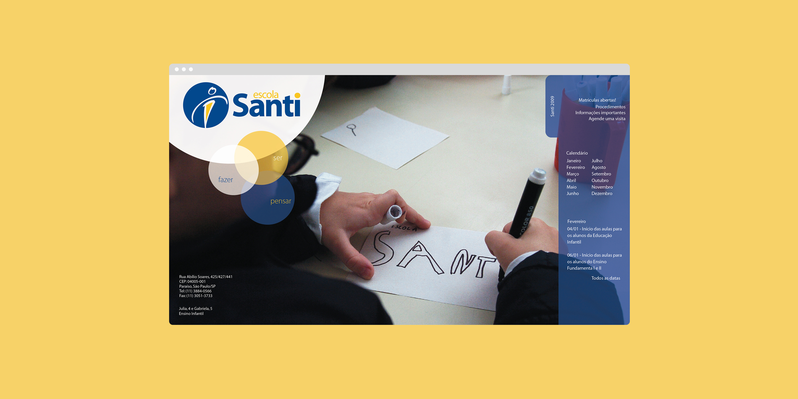

Escola Santo Inácio
Escola Santo Inácio
Visual Identity

Visual Identity
Escola Santo Inácio's internal culture was humanist, warm, and rigorous, but its brand didn't say so. The mark was a rigid, masculine wooden-figure icon in a cold blue that read as distant rather than welcoming, and the name carried unwanted baggage: confusion with a same-named school in Rio, and a religious weight the school, which is secular, didn't want. Against competitors who read as bigger or more result-driven, that warmth was getting lost.
We treated it as a revitalization, not a rupture, keeping enough of the existing mark for continuity while shifting how it felt. We explored eight name and logomark directions, ranging from light touches like Sant'Inácio to a clean break like Ignis, and recommended Santo Inácio de Loyola as the option that kept the school's roots while dropping what no longer fit. We softened the icon into a warmer, more fluid form and introduced an orange to contrast the existing cold blue, a literal symbol of the balance between humanism and academic rigor the school wanted to own, then mocked the direction onto a t-shirt and stationery so leadership could see it living in the real world before signing off.
The client approved the direction, launched it with a dedicated event, and rolled it out across uniforms, the school journal and newspaper, newsletters, templates, environmental design, badges, and folders. Ten years later, it's still in use.